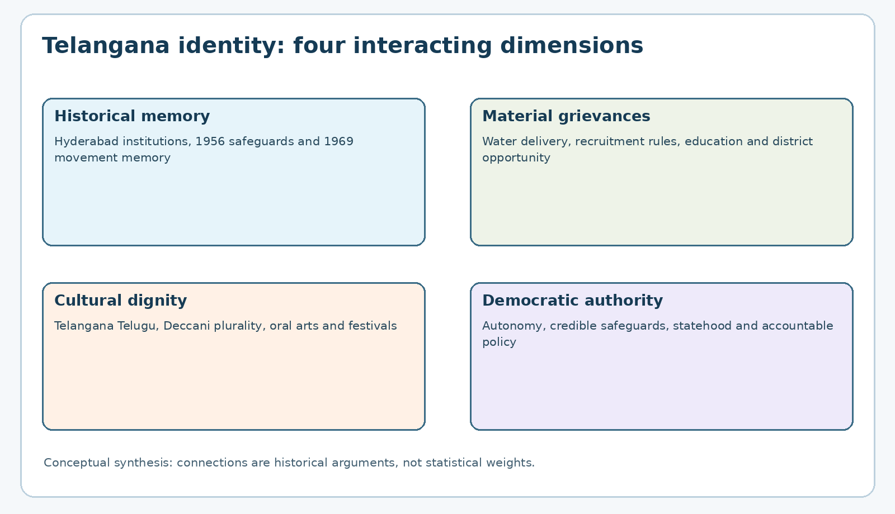
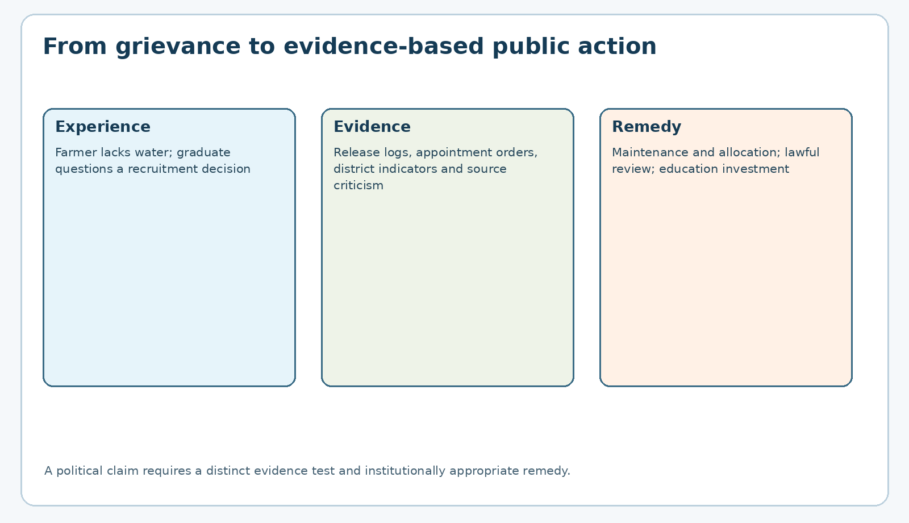
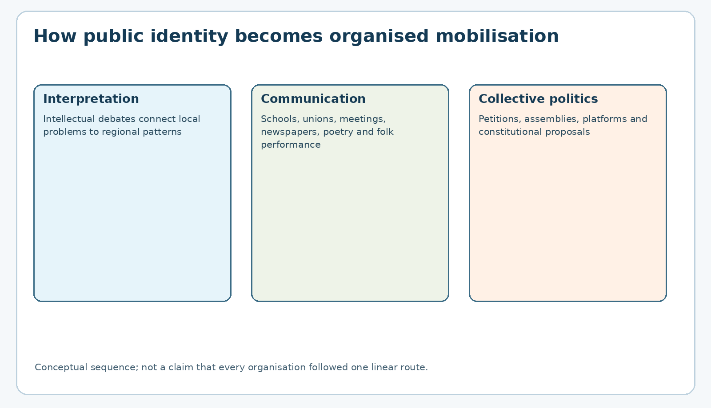

Paper VI — Unit II — Topic 5: Quest for Telangana Identity, Intellectual Debates and Popular Unrest
TGPSC Group I Mains | Telangana Movement and State Formation | Original study chapter | 25 October 2026 | Draft pending independent academic review
Exact syllabus, authenticated against the original 50-page commission-hosted Notification No. 02/2024, dated 19 February 2024, with the precise clause corroborated against its indexed reproduction: “Quest for Telangana identity-intellectual discussions and debates- political and ideological efforts – Growth of popular unrest against regional disparities, discrimination and under development of Telangana.” The direct original PDF opened successfully during this run, but subsequent attempts to search within it returned HTTP 403. Accordingly, the precise Item 5 transcription is corroborated rather than independently re-extracted line-by-line from the accessible PDF. This chapter focuses on the quest and arguments; the named 1997–2004 civil-society organisations are treated as a bridge to Unit III Topic 1, where the syllabus examines them in detail.
Exam warning: Every MCQ and mains question below is original practice, not an authenticated TGPSC previous-year question. Historical claims that require contemporaneous registers are explicitly qualified. No academic approval is claimed.
1. Syllabus map: what exactly must be explained?
| Official phrase | Core questions | Telangana examples and evidence |
|---|---|---|
| Quest for identity | Who is included in “Telangana”; how can language, history and institutions shape a regional public? | Telangana Telugu dialects, Deccani Urdu, festivals, oral arts, Kakatiya and Hyderabad histories |
| Intellectual discussions and debates | How were disparities measured, explained and disputed? | Irrigation, employment, budget allocation, educational access, region-wise data, Professor K. Jayashankar |
| Political and ideological efforts | How did activists connect rights to constitutional federalism and democratic statehood? | Safeguard history, small-state arguments, parties and non-party forums |
| Popular unrest | How do grievances turn into collective mobilisation? | Students, employees, farmers, women, artists, teachers, public meetings |
| Regional disparities and discrimination | What distinguishes uneven outcomes from unlawful discrimination? | Recruitment rules, river-water access, location of institutions, public expenditure |
| Underdevelopment | Which indicators matter, and how should a candidate test claims? | Rainfed districts, tank irrigation, drought, literacy, hospitals, roads, migration |
Working thesis. Telangana identity did not emerge from a single speech or grievance. It developed through a sustained interaction between memories of Hyderabad State, the unfulfilled expectations attached to the 1956 merger, recurring employment and water controversies, unequal development experiences, and a revival of regional cultural expression. The quest had economic, constitutional, political and emotional dimensions. A high-quality mains answer must explain their interaction without implying that every Telangana resident shared the same opinion or that all disparities had a single cause.
2. Historical foundation: why identity outlived the 1969 agitation
The merger of Telangana districts of the former Hyderabad State with Andhra State to form Andhra Pradesh in 1956 created a single Telugu-majority political unit, but not an instant common administrative experience. Telangana had been governed within the multilingual Hyderabad princely state; coastal Andhra and Rayalaseema had different histories of colonial provincial administration. Differences in land tenure, school access, revenue arrangements and the public-service system mattered because integration required decisions about seniority, qualifications, employment protections and development priorities. A common language could assist communication without erasing these institutional differences.
The Gentlemen's Agreement of 1956, Telangana Regional Committee, Mulki rules, the 1969 movement, the 1972 judicial and Jai Andhra controversies, and the Six-Point Formula of 1973 formed a long sequence of promised safeguards and disputes about their meaning. The 1975 Presidential Order under Article 371-D sought a new employment framework. Subsequent disputes over its implementation, including those associated with G.O. 610 in 1985, helped activists argue that formal protection did not necessarily translate into effective local opportunity. Yet it would be historically careless to say every alleged violation was judicially established: separate recruitment records, legal provisions and official inquiries are needed to evaluate each claim.
This memory gave the later quest a language of repeated institutional disappointment. A student in the 1990s could inherit grievances from 1969 without having participated in that agitation. Parents, teachers, unions and local newspapers transmitted the history. Such transmission explains continuity, not inevitability: several movements failed, alliances changed, and the eventual statehood outcome remained contingent on later political developments.
3. Identity is not identical to separatism
Regional identity refers to a sense of shared place, memory, institutions and cultural expression. The demand for a separate state is one possible political programme built upon that identity. A person may cherish Telangana dialects and festivals while preferring a united Andhra Pradesh; another may demand statehood chiefly for administrative reasons rather than cultural difference. Conflating identity and statehood obscures the diversity of opinion that existed among residents, parties and social groups.
The late-twentieth-century quest therefore involved at least three related arguments. The cultural argument sought recognition of locally spoken Telugu, Deccani idioms, oral performance and the historical experiences of the Deccan. The distributive argument questioned the share of irrigation, jobs, institutions and public spending. The democratic argument asserted that people affected by regional policy should exercise meaningful control over policy choices. Each argument could support stronger regional autonomy, better implementation of safeguards, or separate statehood. The political contest concerned which institutional remedy would be credible.
Mains distinction: identity is a social and historical category; regionalism is a political orientation; statehood is a constitutional reorganisation outcome. One should not treat them as interchangeable definitions.
4. The geography of grievance: upland Telangana and uneven opportunity
The physical geography of the Deccan shaped the vocabulary of deprivation. Many Telangana villages relied on tanks, wells and rainfall rather than perennial canal irrigation. Hard-rock aquifers, variable monsoon rainfall and the expense of lifting water could make cultivation risky. Comparisons with canal-irrigated delta districts of coastal Andhra were politically powerful because a difference in reliable water could become a difference in cropping intensity, farm income, creditworthiness and educational opportunity across generations.
But geography alone does not explain policy outcomes. Canal command areas depend on river gradients, dams, allocations, maintenance, power and fiscal choices. A district's agricultural performance also depends on tenancy, soils, market access and credit. Activists asked why major public works, reservoir operation and investment decisions did not sufficiently address dryland needs. Opponents of a simple neglect narrative pointed to topography, engineering feasibility, projects undertaken in Telangana and the need for statewide resource sharing. An analytically sound answer compares potential, planned allocation, actual expenditure and delivered irrigation rather than citing only the headline capacity of a project.
The irrigation debate thus linked an environmental constraint to a political claim: where nature made water costly, government choices about compensatory investment became especially important. The region's vulnerability made distributive decisions highly visible.
5. River-water politics: Krishna, Godavari and the difference between allocation and use
Water disputes were central because the Krishna and Godavari basins connect multiple states and subregions. An inter-state tribunal award allocates water between states; it does not automatically establish how a state government must distribute all benefits among its districts. Intra-state planning, project approvals, command-area design and actual utilisation form another layer of governance. Activists argued that Telangana's share of dependable irrigation did not match its river catchments and needs. Their critics challenged particular calculations, citing project chronology, hydrology and existing commitments.
A disciplined evaluation must identify the river basin, the time period, whether a figure means gross allocation or utilisable yield, and whether a project was proposed, sanctioned, completed or operational. The same number may look different if it represents irrigable acres, water volume, seasonal release or hectares actually watered. Pumping costs and electricity reliability also matter in upland irrigation. For Telangana farmers, the relevant measure was not a canal on a map but water arriving in a field at the right season.
A mains answer should use water as a case of perceived distributive injustice, not assert an unverified universal numerical share. Reliable evidence would include tribunal awards, state project reports, district-wise irrigation statistics and time-series data aligned to historical district boundaries.
6. Employment: the local candidate as a symbol of the wider dispute
Public employment carried significance beyond the salary of an individual recruit. A government job represented mobility for a family, access to stable income, and visible recognition by the state. Recruitment controversies therefore made regional inequality concrete: a candidate could compare eligibility rules, local status, seniority and postings with promises made at political settlements. Disputes under the 1975 Presidential Order and complaints that motivated G.O. 610 provided the later movement with an institutional vocabulary.
However, “non-local” is a legal classification in a specific recruitment context, not a blanket description of anyone born outside a region. The precise local-candidate rules vary by cadre, zone, educational history and applicable order. Nor is a count of employees from another region by itself proof of unlawful appointment. Evidence must show the governing rule, post, roster, selection year, applicable exceptions and whether a competent authority found a violation. Treating allegations as verdicts would weaken an answer.
For students, the deeper issue is the relationship between formal equality and substantive access. If disadvantaged districts have fewer quality schools, even a formally neutral examination can reproduce uneven opportunity. Employment safeguards and educational investment therefore need to be analysed together.
7. Education: who enters the pipeline for public power?
Access to education shaped the composition of professional, administrative and political elites. School density, medium of instruction, university locations, hostel provision, teacher availability and household income influenced who could compete for skilled posts. Telangana's earlier Hyderabad State educational trajectory differed from that of the coastal districts. Over time, educational expansion occurred across the combined state, but activists asked whether new colleges, technical institutes and professional opportunities were distributed fairly and accessible to rural and marginalised groups.
A common analytical error is to count the number of institutions without examining seats, affordability, language, gender and travel time. A private college may exist in a district yet be financially inaccessible to poor families. A university in Hyderabad may serve the entire state, but students from distant villages face housing and language barriers. Similarly, a regional literacy gap may narrow even while competitive-exam coaching and high-paying employment remain concentrated in a metropolis.
For evidence, compare census literacy, district education reports, sanctioned institutions, actual enrolment and professional course seats for the same years. A fair account should recognise gains in mass schooling while explaining why unequal access to elite opportunity remained politically salient.
8. Budgets and the “surplus” controversy: how to read fiscal claims
The Telangana surplus argument appears in discussions of the 1956 merger and resurfaced in later mobilisation. The central question was whether revenues attributable to Telangana were being used according to safeguards and regional priorities. Yet public finance is not a simple household ledger: revenue collected in Hyderabad may relate to businesses operating elsewhere, while state-wide services and debt obligations benefit multiple regions. A defensible comparison requires agreed definitions of region-specific revenue, expenditure, shared administration, capital investment and time period.
Activists treated alleged diversion as evidence that the political centre controlled development priorities. Supporters of integrated planning argued that redistribution among less-developed areas is a normal function of a state and that regional totals may conceal interdependence. Both positions require examination of actual fiscal records. A mains answer should not convert a disputed surplus figure into a proven fact without citing an official reconciliation or audited series.
A useful four-step test is to ask: What was promised? What was budgeted? What was actually spent? What social outcome followed? The final step is crucial because high expenditure on an unfinished project may not improve drinking water or irrigation. Budget justice is ultimately about effective public goods.
9. Hyderabad: metropolitan growth and uneven regional spillovers
Hyderabad's transformation into a services, research, education, pharmaceutical and technology centre complicated the regional debate. The metropolis generated jobs and revenue, attracted migrants and provided a market for rural goods. Its growth could be cited as evidence of development within Telangana. But a successful capital city does not automatically imply balanced development across its hinterland. A district farmer facing unreliable water or a student lacking a nearby college might see little direct benefit from an expanding office corridor.
The distinction between growth location and benefit distribution matters. A high-value industry may be physically located in Telangana while its ownership, supply chains, recruitment and tax flows extend beyond regional boundaries. Conversely, outside investment can create local employment and infrastructure. It is inaccurate to equate migration or investment from another region with exploitation in every case. The legitimate policy questions concern land acquisition, compensation, municipal services, local skill formation, regional infrastructure and who captures rising land values.
Hyderabad thus became both an economic asset and a political symbol. Its mixed population and composite culture also cautioned against reducing Telangana identity to exclusion of people with different origins.
10. Language, dialect and the politics of respect
Telangana Telugu has characteristic vocabulary, pronunciation, idiom and literary traditions. It is not an inferior form of Telugu. In education, cinema, broadcasting and official life, prestige norms can privilege one variety as “standard” and stigmatise others as rustic or comic. Movement writers and performers challenged that hierarchy by using local speech as a language of serious public argument. This was not a rejection of Telugu literature as a whole; it was a demand that Telugu's regional diversity be recognised.
Language matters politically because being mocked for one's accent can signal that one's community lacks authority. A dialect excluded from textbooks may also erase oral memory. Telangana's culture is multilingual: Deccani Urdu, Lambadi and several Adivasi languages coexist with Telugu, and Hyderabad's Ganga-Jamuna Tehzeeb reflects long interaction across religious communities. A culturally inclusive movement must recognise this plurality rather than create a new single-language orthodoxy.
The government of Telangana's contemporary language-and-culture description explicitly recognises oral forms such as Oggu Katha, Golla Suddulu and Dhoom Dham. This modern government account is useful for describing cultural forms; it is not by itself a contemporaneous source for what every activist said in the 1990s.
11. Memory and symbols: from Kakatiya tanks to Bathukamma
Movements construct shared narratives by selecting historical episodes and symbols. Telangana public discourse drew upon Kakatiya-era water systems, peasant struggles, tribal resistance, Bathukamma and Bonalu festivals, local poets and Hyderabad's composite heritage. Such references made abstract claims about expenditure or administration emotionally intelligible. A festival performed publicly could become a statement that a community's culture deserved dignity in state institutions.
Historical memory is selective, however. Kakatiya rule, Nizam-era Hyderabad and the 1946–51 armed struggle belonged to very different political orders. They cannot be collapsed into one uninterrupted movement for modern statehood. A historian asks who invoked each symbol, when, for what audience and with what silences. For instance, celebrating heroic kings without examining caste, landholding or women's lives would provide a partial picture. Likewise, equating all inhabitants of historical Hyderabad with the present Telangana electorate would ignore changes in boundaries.
Symbols were powerful precisely because they connected present claims to remembered landscapes. Their political value does not exempt them from critical historical analysis.
12. Intellectuals as translators between evidence and collective action
Teachers, economists, lawyers, journalists, poets and retired officials often perform an intermediary role in regional movements. They transform individual complaints into general arguments: an unemployed graduate's experience becomes a question about recruitment rules; a dry village becomes a case study in public investment; dialect ridicule becomes a problem of cultural hierarchy. Professor K. Jayashankar is closely associated with the intellectual articulation of Telangana's regional case, particularly water, employment and budget questions.
This role should not be romanticised. Intellectuals can choose indicators that favour their argument, overlook counterexamples or exaggerate causality. Sound scholarship separates a descriptive finding (“district A has fewer irrigated hectares”) from a causal claim (“this occurred solely because of discrimination”) and from a political prescription (“separate statehood is therefore necessary”). Each proposition requires its own evidence and reasoning. A university seminar can widen democratic debate, but academic authority is not a substitute for public consent.
The movement's intellectual phase mattered because it helped turn recurrent anger into a coherent set of claims that could be discussed in meetings, legislative forums and newspapers. Its greatest contribution was not a single number but a sustained vocabulary of rights, resources and recognition.
13. Political ideologies: autonomy, federalism, social justice and statehood
The quest brought together different ideological streams. Regional autonomists emphasised local decision-making and effective safeguards; statehood advocates argued that the administrative centre itself needed to change. Left and agrarian activists foregrounded land distribution, labour rights and rural exploitation. Dalit and Adivasi organisers warned that a new state dominated by existing elites would not necessarily redistribute power. Cultural activists sought recognition of language, festivals and historical experience. Constitutional reformers considered whether a smaller state could improve accountability without undermining national unity.
These positions overlapped but were not identical. A Telangana state could exist without land reform; a strong social-justice programme could be implemented within a larger state; dialect recognition did not require hostility to speakers of another dialect. Some advocates of united Andhra Pradesh valued shared linguistic identity, integrated infrastructure and the economic connections of Hyderabad. Those were political arguments to be weighed, not evidence that all unity supporters opposed Telangana's welfare.
A balanced mains answer should identify both the convergences that made mobilisation possible and the disagreements over the kind of Telangana to build. Democratic statehood is a question of institutions and distributive choices, not merely territorial boundaries.
14. Popular unrest: how individual grievances become a movement
Collective mobilisation generally requires more than dissatisfaction. People need shared interpretation, networks, credible organisers, opportunities to assemble and a belief that collective action can influence policy. Telangana's teachers' groups, employees' associations, student circles, cultural organisations and rural networks supplied different parts of that infrastructure. Meetings could disseminate statistics, songs could make grievances memorable, and local committees could coordinate petitions or demonstrations.
The shift from private grievance to public identity is not automatic. A drought-stricken farmer might initially seek crop compensation; a student might seek a recruitment correction. When participants came to view these problems as symptoms of a recurring regional pattern, the movement acquired a broader frame. This explains why demands for irrigation, fair appointments and cultural recognition appeared together even though they required different remedies.
Unrest also had limits. Mobilisation varied by district, caste, occupation and generation. Some residents feared disruption of business or education; others opposed divisive rhetoric. An exam answer should neither claim unanimous support nor assume that an energetic meeting proved an electoral majority. Public gatherings demonstrate organisation and sentiment, not precise population-wide opinion.
15. Regional discrimination versus structural disparity
Disparity is an observable difference in outcomes; discrimination is differential treatment that violates an applicable standard or is motivated by prohibited bias. Underdevelopment can result from ecology, historical land relations, policy choices, infrastructure deficits and unequal social power. These categories interact but must be analysed separately. A district with fewer hospitals may have been neglected, may have lower population density, or may suffer from weak transport; an evidence-based assessment tests the competing explanations.
For recruitment, the correct evidence is appointment files and the governing legal rules. For irrigation, it is project planning, expenditure and water delivery. For culture, one might examine curriculum, media representation and institutional patronage, alongside oral testimony. A persuasive argument does not require pretending that every difference was deliberately engineered. In fact, separating deliberate exclusion from cumulative structural disadvantage often strengthens the case for targeted remedies.
This distinction is valuable for administrators: a court may remedy an illegal appointment, whereas a geographically unequal school system needs long-term finance, teacher deployment and transport policy. Different causes demand different instruments.
16. The political meaning of “self-rule”
The phrase self-rule was used to express more than an aspiration for a new secretariat. It implied the capacity to choose development priorities, appoint accountable representatives, protect local cultural forms and respond to rural needs. Yet decentralisation can occur at several levels: district planning, Panchayati Raj, regional committees and full statehood. A serious discussion compares these institutional choices rather than assuming that only one is conceivable.
A separate state may bring decision-makers geographically closer to citizens, but proximity does not guarantee representation of women, Dalits, Adivasis or remote districts. Centralisation can be recreated inside a smaller state if resources flow mainly to the capital. Conversely, a regional council may lack sufficient legislative and fiscal powers to overcome perceived neglect. The design question is whether an institution controls revenue, staff, planning and accountability mechanisms.
The strongest version of the Telangana argument linked identity to accountable policy power. Its weakness, if unqualified, was the assumption that a new boundary would automatically eliminate caste inequality, agrarian risk and corruption. A high-scoring answer should state both.
17. Continuity and change between 1969 and the 1990s
The 1969 agitation centred heavily on safeguards, local employment and the demand for separation. Later discourse retained those concerns but expanded them through development economics, cultural assertion, civil-society networks and debates about liberalisation. The 1990s also saw new media opportunities, the spread of professional education, shifts in party competition and a more visible urban-rural contrast. Older participants could connect generations by explaining previous negotiations and why they regarded them as insufficient.
It would be misleading to describe the 1990s simply as a replay of 1969. The composition of organisers, available communication channels and ideological vocabulary had changed. Caste-based movements such as Madiga Dandora and Adivasi mobilisation such as Tudum Debba raised questions of internal inequality, warning that “Telangana people” did not constitute a socially uniform category. Some of these movements had agendas not reducible to statehood; they nevertheless shaped the environment in which representation and social justice were debated.
The most useful chronological interpretation is continuity of grievance with innovation in mobilisation. That phrase allows a candidate to explain both memory and change without inventing an uninterrupted organisation.
18. Cultural labour: poets, folk artists and public pedagogy
A policy memorandum reaches a limited audience; a song can travel across villages, buses and student gatherings. Telangana artists used folk idioms, theatre and poetry to make public issues intelligible. Figures such as Kaloji Narayana Rao, Gaddar, Belli Lalitha and other performers became associated with strands of regional cultural assertion, though their politics and historical roles were not identical. Their performances often linked land, dignity, language and rights rather than presenting a single narrow demand.
Cultural work matters as political education. A lyric can explain why an irrigation promise matters to a farming household, while satire can challenge elite assumptions about “proper” language. The same performance can also simplify complex historical claims; its emotional force does not prove a budget statistic. Researchers should therefore read songs as primary evidence of movement rhetoric and feeling, not as neutral statistical reports.
Gender must be included. Women participated as artists, organisers, students, workers and family members who sustained mobilisation. Reducing their contribution to attendance or treating a single famous singer as representative of all women obscures the work of less-documented participants. An inclusive historical account looks for women's testimony and local organisational records.
19. The 1997 public meetings as a bridge to the next syllabus unit
Meetings at Bhuvanagiri, Suryapet and Warangal during 1997 are frequently cited as important platforms in the renewed public discussion of Telangana. Academic work preserved by the University of Hyderabad describes the Bhuvanagiri Sabha of 8–9 March 1997, the Suryapet Telangana Maha Sabha and the Warangal Declaration. These forums brought writers, teachers, artists and political activists into conversation, giving regional claims a wider audience. The precise number of attendees or demands in contemporary accounts varies and should not be treated as certified without original meeting records.
These meetings are particularly useful for explaining how intellectual debate became public mobilisation. They connected research and cultural expression to resolutions and political demands. However, the commission places the detailed study of Telangana Information Trust, Telangana Aikya Vedika, Bhuvanagiri Sabha, Telangana Jana Sabha, Telangana Maha Sabha and Warangal Declaration in Paper VI Unit III Topic 1. This Topic 5 therefore discusses their bridging function without substituting a detailed institutional chronology for the next topic.
The chronological boundary is pedagogical, not historical: movements do not stop at the edge of a syllabus unit. Students should be able to connect the units while respecting the different examinable focus of each.
20. The competing united-Andhra perspective
A balanced history should represent the principal arguments advanced by supporters of a united Andhra Pradesh. They stressed a common Telugu linguistic identity, interdependent markets, statewide infrastructure, and concern that division might generate disputes over Hyderabad, water and public assets. Some favoured stronger safeguards or decentralisation rather than statehood. They could point to investments and educational institutions developed in Telangana during the combined state's existence, even while acknowledging remaining gaps.
Telangana statehood advocates responded that common language had not produced adequate trust or equal policy influence, and that safeguards repeatedly became sites of dispute. They argued that democratic reorganisation was constitutionally legitimate and could allow priorities better aligned with local needs. The strongest debate was therefore not “unity versus progress” but which institutional arrangement could best ensure fair distribution, cultural recognition and accountable government.
Neither position should be caricatured. Claims of discrimination need evidence, but so do claims that all districts benefited equally from integration. The exam rewards the ability to distinguish normative commitments from historical facts and to explain why sincere disagreement persisted.
21. Social differences inside Telangana: caste, tribe, gender and class
The term “Telangana people” can hide inequalities within the region. Landless labourers, small farmers, urban professionals, Dalits, Adivasis, women and linguistic minorities had distinct experiences. For an irrigation project, landowners with command-area plots might benefit first; tenant farmers could face insecure rights; landless workers might benefit through employment only if local labour demand increased. Similarly, a regional recruitment preference would not help a girl who could not complete secondary school.
Dalit and Adivasi movements highlighted representation, land rights, education and protection from exploitation. Their concerns raised a difficult question for statehood advocates: would the new political arrangement alter local power hierarchies or merely replace one set of elites with another? A comprehensive regional programme would require affirmative inclusion, tribal land protections, women's safety and equitable rural services alongside constitutional reorganisation.
This is not a reason to dismiss the regional demand. It is a reminder that political autonomy and social justice are separate achievements requiring deliberate institutional design. A strong mains conclusion should describe them as complementary, not automatically identical.
22. How to assess regional disparity empirically
A credible district comparison starts with a fixed period and historically consistent boundaries. Telangana's district map changed significantly in 2016; applying present districts to 1990s data without reconstruction can generate false comparisons. Choose indicators for irrigation intensity, per-capita public capital expenditure, school completion, health-worker availability, public recruitment and rural incomes. Record both absolute values and population-adjusted rates. Where possible, distinguish budget allocations from completed facilities.
Then examine alternative explanations: rainfall, soils, historical literacy, settlement patterns, private investment and state policy. Compare districts with similar conditions, not only the most prosperous coastal delta with the poorest upland village. Use time series to determine whether a gap was widening or narrowing. Finally, investigate the institutional mechanism: who made decisions, which scheme was delayed, what formal safeguards applied and what complaints were adjudicated.
The result is not a mechanical score of grievance. It is a transparent evaluation that allows reasonable disagreement. This method helps an aspirant avoid repeating unsupported percentages while demonstrating administrative competence.
23. Why policy remedies must match the problem
Suppose a district lacks irrigation, teachers and fair recruitment. Three different responses are required. Water scarcity may demand tank restoration, groundwater management, watershed works and economically viable lift irrigation. Educational disadvantage requires school access, hostels, teacher deployment and scholarships. Recruitment illegality requires audit of appointments, adherence to the applicable order and due process for affected employees. A single slogan cannot substitute for this policy differentiation.
Statehood may change who makes these decisions, but service delivery still depends on administrative capacity, financial discipline and accountability. Equally, a united state could theoretically implement many remedies, but the question raised by the movement was whether its institutions possessed sufficient political credibility to do so. The distinction between formal possibility and credible implementation explains why repeated promises sometimes failed to end unrest.
A mains answer should identify the grievance, evidence, competent institution, proposed remedy, risks and measurable outcome. That framework transforms a historical discussion into an administratively relevant response.
24. Constitutional framework: democratic state reorganisation
Article 3 of the Constitution empowers Parliament to form new states and alter boundaries through a prescribed process. A state legislature's views are sought when required, but its consent is not a constitutional veto. This legal possibility undercuts the misconception that demanding a separate state is inherently unconstitutional. Equally, Article 3 does not create an individual right to statehood or guarantee that every regional demand will be accepted. The political decision remains with constitutional institutions.
Federalism, equality and representative democracy supplied different vocabularies for Telangana debates. Advocates could argue that a smaller state would improve responsiveness; opponents could argue that a larger state better supported integrated planning. The constitutional framework accommodates debate rather than predetermining its outcome. The later Andhra Pradesh Reorganisation Act, 2014 is evidence of how the process ultimately operated, but should not be projected backward as proof that statehood was inevitable in the 1990s.
The correct exam distinction is between the legality of the demand, the merits of the policy and the historical conditions under which Parliament acted.
25. Evidence, bias and the historian's responsibilities
The movement generated pamphlets, public speeches, newspaper reports, government memoranda, statistical compilations, songs and oral recollections. Each source answers different questions. A speech is strong evidence of what a leader argued, not necessarily of the truth of a numerical allegation. A budget report records expenditure categories but may not capture who benefited. A newspaper reports an event, often with incomplete information. A later government commemoration reflects present public memory and may select some participants over others.
For this chapter, the 2024 commission notification authenticates the syllabus, the Constitution authenticates the legal mechanism, government cultural pages describe recognised traditions, and the University of Hyderabad repository supplies academic retrospective analysis of the 1997 meetings. The original minutes of many 1990s forums, harmonised district investment data and contemporaneous employee rosters were not retrieved. Accordingly, detailed attendance figures and unverified allegations are not asserted as established facts.
Independent academic approval requires checking the original meeting documents, comparing competing historical studies, and verifying each quantitative claim. File integrity and successful PDF rendering are necessary publication checks, not historical validation.
26. Integrated chronology: concepts, not an invented uninterrupted organisation
| Period/date | Process | Relevance to identity |
|---|---|---|
| 1956 | Merger and regional safeguards | Institutional expectations and distinct historical experiences |
| 1969 | Telangana agitation | Mass memory of jobs, safeguards and political recognition |
| 1972–75 | Mulki litigation, Jai Andhra, Six-Point Formula and Presidential Order | New framework and continuing implementation debates |
| 1985 | G.O. 610 | Employment grievances acquire a concrete administrative reference |
| 1990s | Economic change and district disparities debated | Development indicators and cultural respect enter wider argument |
| 8–9 March 1997 | Bhuvanagiri public meeting, as described in academic retrospectives | Writers and artists broaden discussion |
| 1997 | Suryapet and Warangal forums | Declarations and coalition building, detailed next unit |
| 1998 onward | Continued civil-society organising | Regional issue becomes more sustained and public |
| 2001 | Formation of Telangana Rashtra Samithi | Later party-political phase, treated in Unit III Topic 2 |
| 2014 | Telangana state formation | Outcome, not a premise to impose on earlier actors |
27. Summary: a four-dimensional explanation
The quest for Telangana identity was simultaneously historical (distinct Hyderabad-era experiences and memory of safeguards), economic (water, jobs, public investment and unequal opportunity), cultural (respect for dialect, festivals, art and composite heritage), and democratic (the location of decision-making authority). Intellectuals helped turn grievances into arguments, artists carried those arguments into public culture, and social organisations connected them to mobilisation. The case for statehood grew partly because implementation disputes eroded trust in earlier arrangements. Yet the region was internally diverse and alternative institutional remedies were debated. Good history explains both the movement's appeal and the limitations of any single narrative.
28. Standalone quick revision — recall without rereading the chapter
Definitions. Regional identity = shared sense of place, history and culture. Regional disparity = measurable unequal outcomes. Discrimination = unjustified differential treatment under an applicable standard. Underdevelopment = multidimensional shortfall in capabilities, services and opportunities. Statehood = constitutional change in political-administrative territory. These concepts are related but not synonyms.
Six anchor facts. The 1956 merger created Andhra Pradesh with safeguards; 1969 brought mass agitation; 1973 Six-Point Formula and 1975 Presidential Order restructured safeguards; G.O. 610 in 1985 became a later employment reference; public meetings at Bhuvanagiri, Suryapet and Warangal in 1997 expanded the discourse; Telangana was formed on 2 June 2014. Check the relevant original instruments before citing clause-level details.
Six recurring analytical links. Water -> farm risk -> household income; schooling -> eligibility -> recruitment; capital growth -> distribution of benefits; dialect stigma -> dignity -> cultural mobilisation; safeguards -> implementation -> political trust; statehood -> institutional authority -> continuing accountability.
Exam traps. Do not call every inter-regional gap deliberate discrimination. Do not confuse Article 3 with Article 371-D. Do not infer irrigation delivered from a project's proposed capacity. Do not use present districts to compare unadjusted 1990s data. Do not treat 1997 meeting attendance estimates as certified census-like figures. Do not confuse Unit II Topic 5's broad intellectual quest with Unit III Topic 1's named-organisation history.
29. Six applied Telangana administrative case studies
Case A — A canal on paper, no water at the tail end
A planning report claims 30,000 acres of irrigation potential in a drought-prone Telangana district, but the village association reports unreliable seasonal deliveries. A district collector should not treat either number as the whole truth. The investigation must separate designed command area, actually created potential, water released, hectares irrigated and tail-end distribution. It should obtain canal registers, reservoir releases, cropping records, electricity supply data and farmers' testimony, then examine head–tail equity. The case demonstrates why the movement's irrigation grievance could not be resolved by announcing project capacity alone. A policy response might combine maintenance, transparent release schedules, crop planning and participatory monitoring. The historical claim of neglect must be evaluated against comparable district and period data.
Case B — The disputed local appointment
An employees' association alleges that a public-service appointment violated local-candidate provisions. The competent authority must identify the recruitment year, cadre, applicable Presidential Order or rule, local area, roster, educational qualification, exemptions and appointment record. It must provide notice and due process to affected employees rather than treating residence outside Telangana as conclusive proof of illegality. A review may reveal an actual rule breach, an administrative classification error or a lawful exception. This illustrates how a legally precise complaint can become a powerful regional symbol, and why a mains answer must distinguish perceived unfairness from an adjudicated violation.
Case C — The metropolitan growth paradox
Hyderabad gains new professional jobs while a remote district loses young graduates to migration. A regional development board proposes only a large technology park. A more complete plan asks whether the district has broadband, reliable electricity, training, transport, hostels, housing and market linkages. It also assesses the quality of employment, local recruitment and environmental impacts. Some investments may reasonably cluster in Hyderabad because of network effects; the policy problem is ensuring wider spillovers and complementary public goods. The case shows why “Hyderabad grew” and “Telangana districts experienced deprivation” are not logically incompatible statements.
Case D — A dialect in the classroom
A school textbook portrays Telangana speech only through comic characters. Teachers report that children avoid speaking in class. The appropriate response is not to ban other Telugu varieties but to include regional literature, oral history and multilingual classroom practices. A curriculum committee should consult teachers, linguists, writers and students, assess learning outcomes and preserve access to standard written forms needed for wider communication. This case translates cultural self-respect into inclusive educational policy. It also shows why language recognition can be pursued independently of territorial statehood, even when movements connect the two.
Case E — A district-disparity infographic goes viral
A social organisation circulates a graphic claiming that one region received nearly all irrigation expenditure in the 1990s. Before an administrator or researcher repeats it, they should ask for the original budget heads, years, price adjustment, district boundaries, completed-project expenditure and denominator. Capital spending on a cross-regional project may not map neatly onto one district. If the claim is unsupported, the analyst should correct the number without dismissing genuine rural grievances. A transparent dashboard can publish comparable data and allow citizens to test alternatives. This case distinguishes the political power of a statistic from its evidentiary quality.
Case F — Designing a new state's inclusive development plan
A newly created state announces that regional identity has been vindicated, but tribal hamlets lack health centres and landless labourers remain excluded from irrigation gains. A planning team should measure intraregional inequality by caste, tribe, gender, occupation and geography, not just compare the new state with its predecessor. It should consult Gram Sabhas where applicable, monitor school retention and primary health services, protect Scheduled Area land rights and track the distribution of water and employment. This case is the corrective to territorial determinism: changing the boundary can create a new opportunity for policy, but equity depends on deliberate choices and enforceable accountability.
30. Analytical comparison tables
| Question | Oversimplified assertion | More defensible historical answer |
|---|---|---|
| Why did the movement persist? | The 1969 agitation never ended | Earlier memory survived; later actors rebuilt networks and arguments |
| Was Telangana “underdeveloped”? | Every district was uniformly poor | Hyderabad and districts differed; compare multidimensional indicators |
| Was migration itself exploitation? | Every migrant displaced a local | Analyse legal recruitment, land, labour, skills and benefit distribution |
| Does one language require one state? | Telugu unity settled governance | Linguistic affinity and administrative preferences can diverge |
| Would statehood end poverty? | A new border automatically redistributes resources | Institutions, finance and social inclusion determine outcomes |
| Was every disparity discriminatory? | Unequal outcomes prove bias | Test policy mechanisms, legal standards and alternative explanations |
| Evidence type | What it can establish | What it cannot establish alone |
|---|---|---|
| Recruitment order and appointment file | Whether an appointment complied with a particular rule | The complete distribution of social opportunity |
| Irrigation release register | Delivered water for specified seasons | Every historical cause of regional disparity |
| Census literacy table | Education outcome in a given census year | The quality of all schools or deliberate intent |
| Movement speech or song | Public claims, values, mobilisation rhetoric | Verified budget totals or judicial findings |
| State budget | Allocations and reported expenditure categories | Final household-level incidence without evaluation |
| University historical study | Synthesised evidence and interpretation | A substitute for every missing contemporaneous source |
31. Original MCQ practice — 30 explained questions (not official PYQs)
MCQ 1. Which distinction is most accurate? (A) Identity and statehood are identical (B) Identity is social-historical; statehood is a constitutional outcome (C) Identity means only dialect (D) Statehood requires a separate language. Answer: B. A region can possess distinct memory and culture without every resident demanding a new state; Article 3 provides a route for territorial change.
MCQ 2. Which event occurred first? (A) G.O. 610 (B) 1975 Presidential Order (C) 1956 merger (D) 1997 Bhuvanagiri meeting. Answer: C. The chronological order is 1956, 1975, 1985, 1997; dates help distinguish institutional layers.
MCQ 3. Which evidence best tests an allegation that a specific recruitment violated local-candidate rules? (A) A viral poster (B) An employee's birthplace alone (C) Applicable service order and appointment record (D) A film scene. Answer: C. Legality depends on cadre, year, local area and exceptions, not an undifferentiated identity label.
MCQ 4. A reservoir's proposed command area proves: (A) All fields receive water (B) A design intention, not actual delivery (C) Farmers are prosperous (D) There is no need for release records. Answer: B. Actual irrigation requires construction, releases, distribution and seasonal reliability.
MCQ 5. Which constitutional provision principally governs formation of new states? (A) Article 14 (B) Article 3 (C) Article 371-D (D) Article 21. Answer: B. Article 3 concerns state formation; Article 371-D concerns special arrangements in public employment and education.
MCQ 6. What was the main value of cultural performances to regional mobilisation? (A) They certified expenditure (B) They replaced elections (C) They translated grievances into widely accessible expression (D) They ended political disagreement. Answer: C. Songs can spread collective meaning but are not neutral numerical evidence.
MCQ 7. A district has fewer hospitals. Which inference is methodologically sound? (A) Deliberate discrimination is automatically proved (B) No problem exists (C) Compare population, travel, need, funding and policy decisions (D) Use only current district borders. Answer: C. A disparity is observable, while causation and remedy require investigation.
MCQ 8. Which phrase best captures the relationship of Hyderabad to regional development? (A) Metro growth proves equal rural growth (B) Growth and unequal spillovers can coexist (C) All outside investment is harmful (D) Only agriculture matters. Answer: B. Agglomeration can generate regional gains while benefits remain spatially uneven.
MCQ 9. Which is an example of cultural recognition? (A) Mocking a dialect (B) Excluding oral forms (C) Including Oggu Katha in cultural education (D) Declaring all dialects identical. Answer: C. Recognition makes local forms visible without excluding other languages.
MCQ 10. A 1990s comparison using Telangana's 2016 district map without adjustment risks: (A) Better historical precision (B) Boundary inconsistency (C) Constitutional invalidity (D) No statistical problem. Answer: B. Administrative reorganisation changes denominators and geographic coverage.
MCQ 11. Which statement about the 1969 agitation and 1990s mobilisation is best? (A) Same organisation operated continuously (B) No connection existed (C) Grievance memory persisted while networks and framing evolved (D) All activists were identical. Answer: C. Historical continuity does not require uninterrupted organisational identity.
MCQ 12. What is the proper use of a public speech alleging water diversion? (A) As an audited hydrological record (B) As evidence of the speaker's claim and mobilisation (C) As a tribunal award (D) As proof of criminal conduct. Answer: B. The allegation itself needs independent project and allocation records.
MCQ 13. Which pairing is accurate? (A) G.O. 610—1985 employment grievances (B) Article 3—1975 local employment zoning (C) Bhuvanagiri—1956 merger (D) Warangal Declaration—2014 Act. Answer: A. The others confuse distinct events and legal instruments.
MCQ 14. Which group of indicators best captures multidimensional development? (A) Only state GDP (B) Only capital-city real estate (C) Irrigation, education, health, employment and access (D) Only annual rainfall. Answer: C. Multiple capabilities and services must be considered.
MCQ 15. What does an inter-state river tribunal allocation establish? (A) Automatic village-level distribution (B) State-level entitlement within the award's framework (C) Completed canal maintenance (D) Equal district farm incomes. Answer: B. Intra-state planning and actual releases are separate questions.
MCQ 16. Which description of Professor K. Jayashankar is most appropriate? (A) A figure associated with intellectual articulation of Telangana grievances (B) The sole founder of every organisation (C) Author of Article 3 (D) Head of the 1956 SRC. Answer: A. Avoid claims of exclusive leadership or unrelated constitutional authorship.
MCQ 17. What is a credible way to test the “surplus” argument? (A) Quote a slogan only (B) Compare consistent regional revenues, expenditure, shared costs and years (C) Count rallies (D) Use the highest circulating number. Answer: B. Fiscal definitions and attribution are central.
MCQ 18. Which proposition is true? (A) A new state must have a different language (B) Article 3 makes every demand automatically successful (C) Regional identity can coexist with support for political unity (D) Regional autonomy is impossible under the Constitution. Answer: C. Identity, constitutional possibility and political choice are different.
MCQ 19. Which is the strongest criticism of “statehood automatically ends inequality”? (A) It ignores institutions and inequalities within the region (B) It is required by Article 14 (C) It proves all safeguards succeeded (D) It removes the need for elections. Answer: A. Territorial reorganisation cannot alone solve caste, gender or class hierarchies.
MCQ 20. Which statement about Bhuvanagiri 1997 is best supported by academic retrospective literature? (A) It was a forum involving writers and cultural activists (B) It enacted a constitutional amendment (C) It formed Telangana in 1997 (D) It was the 1972 Jai Andhra meeting. Answer: A. It is evidence of public cultural-political mobilisation, not legislation.
MCQ 21. Why might a formally neutral recruitment exam reproduce inequality? (A) Every candidate has identical schooling (B) Unequal school and coaching access affects preparation (C) Eligibility never matters (D) Dialect determines legal domicile. Answer: B. Substantive opportunity depends on education and resources.
MCQ 22. Which movement-era concept addresses the location of policy authority? (A) Self-rule (B) Lithology (C) Crop rotation (D) Phonetics alone. Answer: A. The democratic claim asks who sets priorities and is accountable.
MCQ 23. Which historical interpretation is least defensible? (A) The movement had internal ideological differences (B) Different social groups had different priorities (C) All Telangana residents held identical views (D) Cultural and economic arguments interacted. Answer: C. Political opinion and social position varied.
MCQ 24. A state budget allocation differs from: (A) A recorded promise (B) Actual expenditure and delivered outcome (C) A budget heading (D) A financial year. Answer: B. Allocation, spending and results are analytically distinct stages.
MCQ 25. Which is an appropriate use of the Telangana government culture portal? (A) Verify that certain oral traditions are recognised (B) Prove exact attendance at a 1997 rally (C) Determine every 1969 casualty (D) Replace archival research. Answer: A. Contemporary institutional descriptions are not historical attendance registers.
MCQ 26. Why did safeguards become a political issue beyond their text? (A) Their implementation and credibility were disputed (B) They had no relevance to employment (C) Every claim was automatically upheld (D) They prohibited cultural expression. Answer: A. The gap between formal promise and perceived practice affected trust.
MCQ 27. Which administrative remedy best addresses an illegal local appointment? (A) A film festival (B) Due-process review under the applicable recruitment order (C) Reclassifying rainfall (D) Banning all migration. Answer: B. Legal disputes need lawful evidence-based correction.
MCQ 28. Why must a historian distinguish a song from a budget table? (A) Songs are never sources (B) Each source answers different questions (C) Budget tables always prove causation (D) Both are identical evidence. Answer: B. A song documents cultural rhetoric; a budget records fiscal categories.
MCQ 29. What is the most defensible link between cultural dignity and democratic participation? (A) Stigmatised speech may discourage voice in public institutions (B) All dialects require different states (C) Dialect alone determines income (D) Culture makes law unnecessary. Answer: A. Recognition can affect belonging and willingness to participate.
MCQ 30. Which is the strongest conclusion about Telangana's quest for identity? (A) It was caused only by language (B) It was caused only by irrigation (C) It combined historical memory, economic grievances, cultural dignity and demands for accountable power (D) It began only in 2014. Answer: C. The movement's multidimensional character is the central explanatory insight.
32. Mains answer-writing blueprints
| Original mains prompt | Introduction | Body headings | Conclusion |
|---|---|---|---|
| Explain the quest for Telangana identity | Define regional identity | Historical foundations; economic grievances; culture; political autonomy | Identity and institutions interact |
| Assess the role of intellectuals | State their intermediary function | Evidence-building; public debates; mobilisation; limits | Evidence needs independent testing |
| Analyse regional disparities | Define disparity vs discrimination | Water; employment; education; Hyderabad; methods | Policy remedies need indicators |
| Evaluate cultural assertion | Link language and dignity | Dialect; festivals; folk arts; multilingualism; inclusion | Respect without exclusion |
| Compare 1969 and 1990s mobilisation | Identify phases | Continuity; changed context; civil society; ideology | Memory plus innovation |
| Does statehood ensure development? | Distinguish territorial change from outcomes | Democratic promise; institutional capacity; social justice; safeguards | Accountability after statehood |
33. Six complete structured mains model answers (original practice)
Mains 1 — Explain the historical and socioeconomic foundations of the quest for Telangana identity. (200–250 words)
Introduction. Telangana identity emerged from a distinctive historical experience and a continuing debate over equitable development and democratic power. It was more than a demand for a new administrative boundary.
Historical background. Telangana's past within multilingual Hyderabad State differed from the colonial provincial experience of coastal Andhra and Rayalaseema. The 1956 merger brought regional safeguards, but controversies concerning their implementation persisted. The 1969 agitation and later employment disputes supplied a shared political memory.
Economic grievances. Many upland districts faced uncertain rainfall, costly irrigation, limited educational access and restricted opportunities for public employment. Activists contrasted these conditions with more reliably irrigated areas and questioned budget priorities. Hyderabad's growth was real, yet benefits did not reach every rural district equally. These claims require district-wise evidence rather than unsupported numerical generalisations.
Cultural and democratic dimensions. Telangana dialects, folk forms and festivals became symbols of dignity. Intellectuals and artists linked regional experience with arguments about self-rule and accountable institutions. The 1990s broadened public discussion beyond the earlier safeguard-centred agitation.
Conclusion. The quest combined history, resources, recognition and political voice. Its strength lay in connecting individual grievances to institutional questions; its limitation was that statehood alone could not guarantee social justice or balanced development.
Mains 2 — Examine the role of intellectual discussions and cultural expression in Telangana mobilisation. (200–250 words)
Introduction. Intellectual work helped transform dispersed complaints into a publicly intelligible regional argument. Cultural expression enabled those arguments to circulate beyond universities and official committees.
Evidence and debate. Teachers, researchers, journalists and retired officials discussed irrigation, recruitment, education and expenditure. Professor K. Jayashankar became closely associated with the articulation of Telangana's regional case. Such analysis made it possible to challenge government priorities in a vocabulary of rights and measurable outcomes. Yet descriptive disparities, causal explanations and political remedies had to be distinguished; a persuasive speech was not automatically an audited statistic.
Cultural mobilisation. Writers and performers challenged the treatment of Telangana Telugu as inferior and used songs, theatre and oral traditions to express land, labour and dignity concerns. Figures such as Kaloji and Gaddar were associated with important strands of this public culture. The 1997 Bhuvanagiri, Suryapet and Warangal meetings illustrate the interaction of intellectual forums and wider public participation, although attendance estimates require archival checking.
Critical perspective. The movement contained differences over caste, gender, land reform, autonomy and statehood. Intellectual authority did not eliminate those disagreements, nor did artistic power establish factual accuracy.
Conclusion. Intellectuals framed grievances, while cultural workers gave them social reach. Their combined contribution was to make regional identity a sustained democratic debate rather than a collection of isolated complaints.
Mains 3 — Distinguish regional disparity from discrimination with reference to Telangana. (200–250 words)
Introduction. Regional disparity denotes measurable differences in outcomes; discrimination refers to unjustified differential treatment under an applicable rule or standard. Confusing the two can produce weak historical conclusions and ineffective administration.
Water and agriculture. Telangana's hard-rock uplands and rainfall variability increased irrigation costs. Activists also questioned public investment and project priorities. To establish policy neglect, one must compare sanctioned works, expenditure, delivered water and comparable geographical conditions, not merely contrast two headline figures.
Employment and education. Complaints about local recruitment require the relevant Presidential Order, cadre, appointment year and exceptions. A non-local employee's presence does not alone prove illegality. Unequal schooling, hostels and professional training can also reduce opportunity even where an examination is formally neutral.
Metropolitan contrast. Hyderabad's expansion generated growth, but remote districts could remain underserved. This shows uneven spillovers; identifying deliberate discrimination needs further evidence about decisions, access and distribution.
Administrative response. A proven unlawful appointment needs due-process correction. A school-access gap needs infrastructure, teachers and financial support. A water gap needs engineering, maintenance and participatory allocation. All require transparent data and evaluation.
Conclusion. Telangana's debate was strengthened by identifying structural disadvantage, but sound analysis must test competing causes and choose remedies appropriate to each problem.
Mains 4 — Assess how language, culture and historical memory contributed to Telangana's political identity. (200–250 words)
Introduction. Cultural identity gave the Telangana movement a vocabulary of dignity that complemented arguments about jobs, water and public finance.
Language. Telangana Telugu carries distinctive vocabulary, rhythms and oral expression. Its portrayal as merely comic or non-standard could reinforce social hierarchies. Movement writers used local speech in serious poetry and political argument, contesting the assumption that one prestige dialect represented all Telugu speakers.
Cultural practices. Bathukamma, Bonalu, Oggu Katha and Dhoom Dham provided recognisable symbols and performance spaces. Songs could communicate the consequences of drought or unemployment to audiences who might never read a policy memorandum. Telangana's Deccani Urdu and Adivasi languages also show why regional recognition should remain plural and inclusive.
Historical memory. The Kakatiyas, Hyderabad State, peasant struggles and the 1969 agitation furnished narratives of distinct experience. These histories belong to different periods and should not be flattened into a single uninterrupted statehood movement. Critical history asks which memories were highlighted and which social groups were left out.
Limitations. Cultural pride does not automatically prove economic discrimination, nor does it require hostility toward people of another region. Women, Dalits and Adivasis must be represented in the narrative.
Conclusion. Culture turned abstract grievances into shared public meaning, while inclusive recognition offered a democratic foundation for regional self-respect.
Mains 5 — Compare the 1969 Telangana agitation with the renewed intellectual and public debate of the 1990s. (200–250 words)
Introduction. The two phases were connected by historical memory but differed in their organisations, issues and communication methods.
Continuity. Both questioned the credibility of regional safeguards and the fairness of employment and development arrangements after the 1956 merger. The 1969 movement remained a reference point for later students, employees and public speakers. The Six-Point Formula, 1975 Presidential Order and G.O. 610 became part of the intervening institutional story.
Changed context. By the 1990s, Hyderabad's service-sector expansion and rural development concerns sharpened debates over who benefited from growth. Intellectuals framed issues through irrigation, fiscal allocation and education statistics. Cultural activists contested the marginalisation of Telangana dialects and traditions. The rise of caste and Adivasi assertions made internal social inequalities harder to ignore.
Public platforms. Meetings such as Bhuvanagiri, Suryapet and Warangal in 1997 linked academic, literary and political discussion. They helped rebuild networks, but they were not evidence of one organisation operating continuously since 1969. Their detailed organisational histories belong to the next syllabus unit.
Critical perspective. Neither phase represented unanimous regional opinion. Alternative views favoured better safeguards or integrated development within Andhra Pradesh.
Conclusion. The best description is continuity of grievance combined with innovation in mobilisation: an inherited question was reframed through new social, economic and cultural conditions.
Mains 6 — “Statehood is an opportunity for development, not a guarantee.” Discuss using the Telangana experience. (200–250 words)
Introduction. A new state can relocate political authority and make government more responsive, but development depends on the institutions and policies that follow reorganisation.
Democratic promise. Telangana advocates argued that decisions on irrigation, education, recruitment and cultural policy would receive greater local accountability under statehood. Article 3 provides a constitutional mechanism for territorial change, although it does not confer an automatic right to a new state.
Limits of a new boundary. Rainfall variability, hard-rock aquifers, rural indebtedness, unequal schooling and entrenched caste relations do not disappear when a state is formed. Hyderabad's growth may continue to outpace remote districts unless infrastructure, skills and services are deliberately spread. Women, landless labourers and Adivasi communities may remain excluded if policy benefits accrue mainly to existing elites.
Institutional priorities. Effective self-rule requires transparent budgeting, district-level outcome monitoring, lawful recruitment, fair irrigation delivery, strong local bodies and meaningful consultation. Scheduled Area protections, school access and primary healthcare should be evaluated independently of headline state income.
Balanced assessment. Supporters of a united state could also propose decentralisation and better safeguards. The political question was whether those arrangements had sufficient credibility and power to deliver change.
Conclusion. Telangana's history illustrates why constitutional reorganisation can answer a demand for political voice, while equitable development remains a continuing task of accountable governance.
34. Dated source register and primary-source audit
- 19 February 2024 — Telangana State Public Service Commission, Group-I Notification 02/2024, Annexure-II, Paper VI Unit II Item 5. The original 50-page PDF opened through the commission host on 25 October 2026; its exact clause is corroborated by an independently indexed syllabus transcription. Direct in-PDF retrieval of the precise Item 5 line became unavailable after an HTTP 403. https://websitenew.tgpsc.gov.in/preview/RElSRUNUUkVDUlVJVE1FTlROT1RJL05PVElGSUNBVElPTl9OT18wMi0yMDI0X0dyb3VwLUlfU2VydmljZXMgKDEpMjAyNDAyMjAxNDA3MzcucGRmr95v17a0y2d8i13v
- 6 October 2026 check — PrepShark indexed reproduction of Notification 02/2024. Secondary transcription of the official clause, used only to corroborate wording, not as a replacement for the commission original. https://prepshark.in/tgpsc/group-1/syllabus
- 1950, as amended — Constitution of India, Article 3. Primary constitutional authority for state formation. https://legislative.gov.in/constitution-of-india/
- 1955 — States Reorganisation Commission report. Original Government of India report relevant to earlier merger debates; use with its historical date and avoid treating it as a report on the 1990s. https://www.mha.gov.in/sites/default/files/2022-08/StateReorganisationCommissionReport1955_0%5B1%5D.pdf
- 2010 — Committee for Consultations on the Situation in Andhra Pradesh (Srikrishna Committee). Ministry of Home Affairs official retrospective report, relevant to historical grievance and regional development interpretations; full original PDF was not reopened in this run. https://www.mha.gov.in/sites/default/files/2022-08/CCSAPREPORT_0.pdf
- 2014 — Andhra Pradesh Reorganisation Act, 2014. Primary statutory endpoint for the later statehood process, not evidence of inevitability in the 1990s. https://www.indiacode.nic.in/handle/123456789/2123
- 2026 access — Telangana State Government, Language and Culture. Official institutional description of Telangana's multilingual composite culture and folk forms; contemporary description, not contemporaneous 1990s meeting minutes. https://www.telangana.gov.in/about/language-culture/
- 2026 access — Telangana Tourism, Culture and History. Government cultural heritage account useful for institutional recognition of regional traditions. https://tourism.telangana.gov.in/experience/culture-history
- University of Hyderabad repository, thesis hosted 2022 — retrospective research on 1997 public meetings. Academic secondary account describing Bhuvanagiri, Suryapet and Warangal events; original minutes and certified attendance were not retrieved. https://igmlnet.uohyd.ac.in/docs/hi-res/hcu_images/TH12608.pdf
- 2022 — Telugu-language Telangana movement history, NT News study material. Secondary retrospective corroboration of the 1997 Bhuvanagiri and Warangal platforms; not an original 1997 register. https://nipuna.ntnews.com/study-material/history/telangana-movement-community-associations-561274.html
- 2 June 2024 — Telangana State Formation Day official address. A present-day government articulation of cultural memory; do not use as neutral proof of all historical movement claims. https://www.telangana.gov.in/news/press-releases/2024/06/telangana-state-formation-day-celebrations/
- 2026 access — Telangana State Portal, state overview. Official record of 2 June 2014 formation and present-day state institutions. https://www.telangana.gov.in/
Evidence gaps and limits. The signed minutes of several 1990s intellectual forums, complete contemporaneous meeting attendance registers, region-wise budget reconciliations, historical appointment rosters, comparable district irrigation delivery series, and a direct line-by-line PDF extraction of the original commission Item 5 clause remain outstanding. Some official historical documents were identified by institutional index but could not be fully opened. None of the original practice questions is labelled an official PYQ. Independent academic review is required before approval.
35. Final integrated conclusion
The quest for Telangana identity is best understood as an argument about recognition, distribution and political authority. Distinct historical memory and cultural forms made a regional community visible; water, employment and education debates gave it concrete policy demands; intellectuals, artists and social organisations made those demands public; and recurring implementation disputes weakened trust in earlier safeguards. The movement's strength was its capacity to join these dimensions. Its analytical challenge was to represent competing views, avoid unsupported statistics and acknowledge internal caste, tribal, gender and class differences. The historical outcome of statehood must be studied alongside the continuing responsibility to deliver inclusive development.
Three original conceptual diagrams


